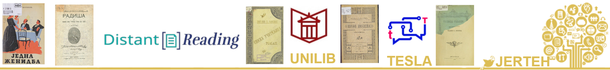

SrpELTeC: Serbian Literary Corpus for Distant Reading
Sources
University Library “Svetozar Marković”, National Library of Serbia, "Matica srpska" Library, Library of SASA, Library of Serbian Literature Department at the Faculty of Philology UB, private library Cvetana Krstev & Duško Vitas
License
All versions of SrpELTeC are freely available under CC‑BY 4.0.
Citation
Please cite the publications listed below (see Publications).
Abstract
The corpus SrpELTeC was developed within COST Action CA16204 Distant Reading for European Literary History. Novels were selected, prepared, and annotated using ELTeC-wide principles. All texts are manually encoded in TEI with rich metadata and structural annotation, while automatic annotation includes POS‑tagging, lemmatization, and named entities, relying on JeRTeh language resources. SrpELTeC integrates with Wikidata via SPARQL queries and offers a Linked Data/NIF edition prepared within COST Action CA18209 NexusLinguarum. All versions are open under CC‑BY.
Key Features
Curated selection
100 novels (1840–1920) chosen to balance gender, length, period coverage, and canonicality.
20 novels in extended collection from the same period
TEI Level‑1 & Level‑2
Manually curated TEI headers and structure following TEI Level‑1 guidelines;
Tokenization, sentences, POS, lemmas, and seven named entitiy classes (PERS, ROLE, LOC, ORG, DEMO, EVENT, WORK) foolowing Level‑2 guidelines.
Infotheca special issue
Infotheca - Journal for Digital Humanities, Vol 21 No 2 (2021), issue dedicated to the srpELTeC collection.
Tooling
Annotations using tools integrated via JeRTeh pipelines. TXM for textometry ; UnitexGramLab; SrpKor4Tagging-TreeTagger models for Serbian.
Linked Data
Wikidata integration: SPARQL queries with diverse visualizations and SrpELTeC-NIF (NIF, NLP Interchange Format) export.
Open & Reusable
Openly available data (CC‑BY) with reproducible metadata and clear versioning.
Collection at a Glance
Platforms & Access
Downloads
- TEI/XML novels repo links: Level‑1 main, Level‑1 extended & Level‑2
- Metadata CSV
- NER statistics
Explore Online
- NoSketch Engine node (JeRTeh)
- Aurora portal — vocabulary, concordances, frequency lists
- “Udaljeno čitanje” — parallel print scans & digital text
- Fuseki (JeRTeh) — SPARQL endpoint on SrpELTeC-SMD NIF (NLP Interchange Format)
Linked Data & SPARQL
The SrpELTeC Linked Data edition uses NIF and maps NE classes to Wikidata/OLiA/DBpedia categories. A public Apache Jena Fuseki endpoint is available at JeRTeh for exploration and SPARQL queries.
Example (Jakov Ignjatović nouns): Retrieve most frequent nouns for an author.
SPARQL example (inline snippet)
PREFIX nif:
PREFIX xsd:
PREFIX dc: ;
nif:referenceContext ?novelid .
# Jakov Ignjatović
?novelid dc:creator wd:Q570913 .
}
GROUP BY ?lemma
ORDER BY desc(?count)
Serbian Wikibase hosted on Wikibase Cloud. This Wikibase instance is used for experiments linking the Serbian ELTEC NIF corpus to an Ontolex-Lemon dictionary.
Selected publications
Key references (selection):
- Ranka Stanković, Cvetana Krstev, and Duško Vitas. SrpELTeC: A Serbian Literary Corpus for Distant Reading. Primerjalna književnost 47, no. 2 (2024).
- Cvetana Krstev The Serbian Part of the ELTeC Collection Through the Magnifying Glass of Metadata. Infotheca, vol. 21, no. 2, 2021, pp. 26-42.
- Ranka Stanković, Cvetana Krstev, Branislava Šandrih Todorović, Mihailo Škorić, Annotation of the Serbian ELTeC Collection. Infotheca, vol. 21, no. 2, 2021, pp. 43–59,
- Ranka Stanković, Cvetana Krstev, Branislava Šandrih Todorović, Dusko Vitas, Mihailo Skoric, and Milica Ikonić Nešić Distant Reading in Digital Humanities: Case Study on the Serbian Part of the ELTeC Collection. LREC 2022 Conference Proceedings, edited by Nicoletta Calzolari et al., ELRA, Paris, 2022, pp. 3337–3345.
- Milica Ikonić Nešić, Ranka Stanković, Christof Schöch, and Mihailo Škoric From ELTeC Text Collection Metadata and Named Entities to Linked-data (and Back). 8th Workshop on Linked Data in Linguistics within the 13th LREC, ed. Thierry Declerck et al., ELRA, 2022, pp. 7–16.
Acknowledgments
Supported by COST Action CA16204 (Distant Reading), the TESLA project (Science Fund of the Republic of Serbia, PRIZMA, Grant 7276), COST Action CA18209 (NexusLinguarum), and Wikimedia Serbia (WikiELTeC).
Contact
For inquiries, data access, or collaboration proposals:
- Cvetana Krstev — ORCID 0000-0003-3328-9392
- Ranka Stanković — ORCID 0000-0001-5123-6273
- Duško Vitas — ORCID 0000-0003-4194-692X
© SrpELTeC project • Content under CC‑BY 4.0.
